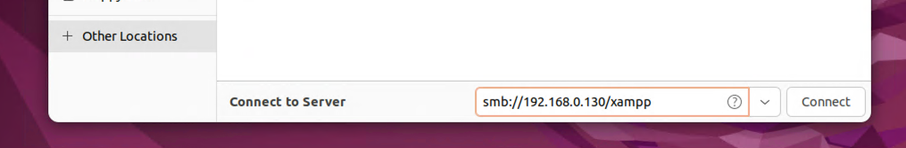
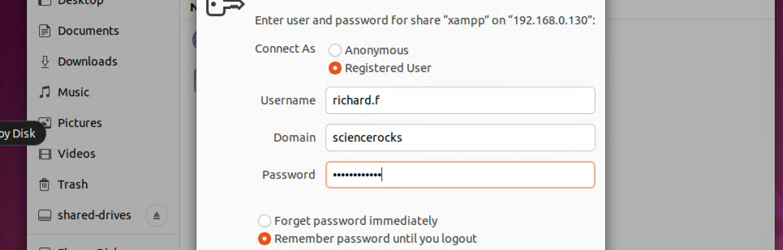
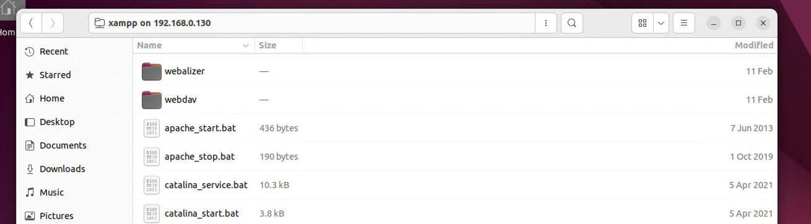

Now that we know we have valid AD credentials one of the next things we should do is take a look at any SMB shares we have access to to see if there is anything we can compromise.
crackmapexec smb hosts/windows.txt -u richard.f -p "Security24-7" --shares
SMB 192.168.0.120 445 HAWKINGWINSRV19 [+] Sciencerocks.local\richard.f:Security24-7
SMB 192.168.0.120 445 HAWKINGWINSRV19 [+] Enumerated shares
SMB 192.168.0.130 445 FEYNMAN-WINSRV1 [+] Sciencerocks.local\richard.f:Security24-7
SMB 192.168.0.120 445 HAWKINGWINSRV19 Share Permissions Remark
SMB 192.168.0.120 445 HAWKINGWINSRV19 ----- ----------- ------
SMB 192.168.0.120 445 HAWKINGWINSRV19 ADMIN$ Remote Admin
SMB 192.168.0.120 445 HAWKINGWINSRV19 C$ Default share
SMB 192.168.0.120 445 HAWKINGWINSRV19 IPC$ READ Remote IPC
SMB 192.168.0.100 445 EINSTEIN-DC01 [+] Sciencerocks.local\richard.f:Security24-7
SMB 192.168.0.104 445 KEPLER-LINSRV14 [+] \richard.f:Security24-7
SMB 192.168.0.104 445 KEPLER-LINSRV14 [+] Enumerated shares
SMB 192.168.0.104 445 KEPLER-LINSRV14 Share Permissions Remark
SMB 192.168.0.104 445 KEPLER-LINSRV14 ----- ----------- ------
SMB 192.168.0.104 445 KEPLER-LINSRV14 print$ Printer Drivers
SMB 192.168.0.104 445 KEPLER-LINSRV14 IPC$ IPC Service (kepler-linsrv14 server (Samba, Ubuntu))
SMB 192.168.0.130 445 FEYNMAN-WINSRV1 [+] Enumerated shares
SMB 192.168.0.130 445 FEYNMAN-WINSRV1 Share Permissions Remark
SMB 192.168.0.130 445 FEYNMAN-WINSRV1 ----- ----------- ------
SMB 192.168.0.130 445 FEYNMAN-WINSRV1 ADMIN$ Remote Admin
SMB 192.168.0.130 445 FEYNMAN-WINSRV1 C$ Default share
SMB 192.168.0.130 445 FEYNMAN-WINSRV1 IPC$ READ Remote IPC
SMB 192.168.0.130 445 FEYNMAN-WINSRV1 Users READ
SMB 192.168.0.130 445 FEYNMAN-WINSRV1 xampp READ,WRITE
SMB 192.168.0.100 445 EINSTEIN-DC01 [+] Enumerated shares
SMB 192.168.0.100 445 EINSTEIN-DC01 Share Permissions Remark
SMB 192.168.0.100 445 EINSTEIN-DC01 ----- ----------- ------
SMB 192.168.0.100 445 EINSTEIN-DC01 ADMIN$ Remote Admin
SMB 192.168.0.100 445 EINSTEIN-DC01 C$ Default share
SMB 192.168.0.100 445 EINSTEIN-DC01 IPC$ READ Remote IPC
SMB 192.168.0.100 445 EINSTEIN-DC01 NETLOGON READ Logon server share
SMB 192.168.0.100 445 EINSTEIN-DC01 SYSVOL READ Logon server share
Take note of the xampp share which our compromised user account has both READ and WRITE access to!
We can also use CrackMapExec to spider though a particular share searching for interesting filenames. For example:
cme smb 192.168.0.130 -u richard.f -p Security24-7 --spider xampp --pattern passw
SMB 192.168.0.130 445 FEYNMAN-WINSRV1 [*] Started spidering
SMB 192.168.0.130 445 FEYNMAN-WINSRV1 [*] Spidering .
SMB 192.168.0.130 445 FEYNMAN-WINSRV1 //192.168.0.130/xampp/passwords.txt [lastm:'2023-03-11 13:07' size:824]
SMB 192.168.0.130 445 FEYNMAN-WINSRV1 //192.168.0.130/xampp/apache/bin/htpasswd.exe [lastm:'2023-03-11 13:07' size:119296]
SMB 192.168.0.130 445 FEYNMAN-WINSRV1 //192.168.0.130/xampp/htdocs/dashboard/docs/reset-mysql-password.html [lastm:'2023-03-11 13:07' size:6476]
SMB 192.168.0.130 445 FEYNMAN-WINSRV1 //192.168.0.130/xampp/htdocs/dashboard/docs/reset-mysql-password.pdf [lastm:'2023-03-11 13:07' size:61387]
SMB 192.168.0.130 445 FEYNMAN-WINSRV1 //192.168.0.130/xampp/htdocs/dashboard/docs/reset-mysql-password.pdfmarks [lastm:'2023-03-11 13:07' size:215]
SMB 192.168.0.130 445 FEYNMAN-WINSRV1 //192.168.0.130/xampp/htdocs/dashboard/docs/images/reset-mysql-password [dir]
SMB 192.168.0.130 445 FEYNMAN-WINSRV1 //192.168.0.130/xampp/MercuryMail/MAIL/Admin/PASSWD.PM [lastm:'2023-03-11 13:07' size:66]
SMB 192.168.0.130 445 FEYNMAN-WINSRV1 //192.168.0.130/xampp/MercuryMail/MAIL/newuser/PASSWD.PM [lastm:'2023-03-11 13:07' size:71]
SMB 192.168.0.130 445 FEYNMAN-WINSRV1 //192.168.0.130/xampp/MercuryMail/MAIL/postmaster/PASSWD.PM [lastm:'2023-03-11 13:07' size:66]
SMB 192.168.0.130 445 FEYNMAN-WINSRV1 //192.168.0.130/xampp/php/pear/File/Passwd [dir]
SMB 192.168.0.130 445 FEYNMAN-WINSRV1 //192.168.0.130/xampp/php/pear/File/Passwd.php [lastm:'2023-03-11 13:07' size:13548]
SMB 192.168.0.130 445 FEYNMAN-WINSRV1 //192.168.0.130/xampp/phpMyAdmin/libraries/classes/UserPassword.php [lastm:'2023-03-11 13:07' size:7024]
SMB 192.168.0.130 445 FEYNMAN-WINSRV1 //192.168.0.130/xampp/phpMyAdmin/libraries/classes/Controllers/UserPasswordController.php [lastm:'2023-03-11 13:07' size:3379]
SMB 192.168.0.130 445 FEYNMAN-WINSRV1 //192.168.0.130/xampp/phpMyAdmin/templates/user_password.twig [lastm:'2023-03-11 13:07' size:83]
SMB 192.168.0.130 445 FEYNMAN-WINSRV1 //192.168.0.130/xampp/phpMyAdmin/templates/server/privileges/change_password.twig [lastm:'2023-03-11 13:07' size:3401]
SMB 192.168.0.130 445 FEYNMAN-WINSRV1 //192.168.0.130/xampp/phpMyAdmin/themes/bootstrap/img/password.svg [lastm:'2023-03-11 13:07' size:342]
SMB 192.168.0.130 445 FEYNMAN-WINSRV1 //192.168.0.130/xampp/phpMyAdmin/themes/metro/img/s_passwd.png [lastm:'2023-03-11 13:07' size:1034]
SMB 192.168.0.130 445 FEYNMAN-WINSRV1 //192.168.0.130/xampp/phpMyAdmin/themes/original/img/s_passwd.png [lastm:'2023-03-11 13:07' size:331]
SMB 192.168.0.130 445 FEYNMAN-WINSRV1 //192.168.0.130/xampp/phpMyAdmin/themes/pmahomme/img/s_passwd.png [lastm:'2023-03-11 13:07' size:331]
SMB 192.168.0.130 445 FEYNMAN-WINSRV1 [*] Done spidering (Completed in 149.30476093292236)
When in doubt, one of the quickest/easiest ways to connect to an SMB share is to use the smbclient commandline utility.
smbclient --help
Usage: smbclient [OPTIONS] service <password>
-M, --message=HOST Send message
-I, --ip-address=IP Use this IP to connect to
-E, --stderr Write messages to stderr instead of stdout
-L, --list=HOST Get a list of shares available on a host
-T, --tar=<c|x>IXFvgbNan Command line tar
-D, --directory=DIR Start from directory
-c, --command=STRING Execute semicolon separated commands
-b, --send-buffer=BYTES Changes the transmit/send buffer
-t, --timeout=SECONDS Changes the per-operation timeout
-p, --port=PORT Port to connect to
-g, --grepable Produce grepable output
-q, --quiet Suppress help message
-B, --browse Browse SMB servers using DNS
Help options:
-?, --help Show this help message
--usage Display brief usage message
Common Samba options:
-d, --debuglevel=DEBUGLEVEL Set debug level
--debug-stdout Send debug output to standard output
-s, --configfile=CONFIGFILE Use alternative configuration file
--option=name=value Set smb.conf option from command line
-l, --log-basename=LOGFILEBASE Basename for log/debug files
--leak-report enable talloc leak reporting on exit
--leak-report-full enable full talloc leak reporting on exit
Connection options:
-R, --name-resolve=NAME-RESOLVE-ORDER Use these name resolution services only
-O, --socket-options=SOCKETOPTIONS socket options to use
-m, --max-protocol=MAXPROTOCOL Set max protocol level
-n, --netbiosname=NETBIOSNAME Primary netbios name
--netbios-scope=SCOPE Use this Netbios scope
-W, --workgroup=WORKGROUP Set the workgroup name
--realm=REALM Set the realm name
Credential options:
-U, --user=[DOMAIN/]USERNAME[%PASSWORD] Set the network username
-N, --no-pass Do not ask for a password
--password=STRING Password
--pw-nt-hash The supplied password is the NT hash
-A, --authentication-file=FILE Get the credentials from a file
-P, --machine-pass Use stored machine account password
--simple-bind-dn=DN DN to use for a simple bind
--use-kerberos=desired|required|off Use Kerberos authentication
--use-krb5-ccache=CCACHE Credentials cache location for Kerberos
--use-winbind-ccache Use the winbind ccache for authentication
--client-protection=sign|encrypt|off Configure used protection for client
connections
Deprecated legcacy options:
-k, --kerberos DEPRECATED: Migrate to --use-kerberos
Version options:
-V, --version Print version
To connect to an SMB share use the following command:
smbclient '\\192.168.0.130\xampp' -U 'sciencerocks\richard.f' -p
Password for [SCIENCEROCKS\richard.f]:
Try "help" to get a list of possible commands.
smb: \> dir
. D 0 Wed Mar 15 15:01:51 2023
.. D 0 Mon Feb 20 11:59:07 2023
anonymous D 0 Sat Feb 11 14:59:03 2023
apache D 0 Sat Feb 11 14:59:17 2023
apache_start.bat A 436 Fri Jun 7 06:15:44 2013
apache_stop.bat A 190 Tue Oct 1 02:13:32 2019
catalina_service.bat A 10324 Mon Apr 5 11:16:20 2021
catalina_start.bat A 3766 Mon Apr 5 11:17:38 2021
catalina_stop.bat A 3529 Mon Apr 5 11:17:35 2021
cgi-bin D 0 Sat Feb 11 15:05:20 2023
contrib D 0 Sat Feb 11 14:58:56 2023
ctlscript.bat A 3499 Sat Feb 11 14:58:50 2023
FileZillaFTP D 0 Sat Feb 11 15:05:18 2023
filezilla_setup.bat A 78 Sat Mar 30 07:29:00 2013
filezilla_start.bat A 150 Fri Jun 7 06:15:48 2013
filezilla_stop.bat A 149 Fri Jun 7 06:15:48 2013
htdocs D 0 Sat Feb 11 14:59:03 2023
img D 0 Sat Feb 11 14:58:50 2023
install D 0 Sat Feb 11 15:05:17 2023
killprocess.bat A 299 Wed Jun 15 11:07:39 2022
licenses D 0 Sat Feb 11 14:58:52 2023
locale D 0 Sat Feb 11 14:58:52 2023
mailoutput D 0 Sat Feb 11 14:58:52 2023
mailtodisk D 0 Sat Feb 11 14:59:14 2023
MercuryMail D 0 Sat Feb 11 15:05:18 2023
mercury_start.bat A 136 Fri Jun 7 06:15:48 2013
mercury_stop.bat A 60 Fri Jun 7 06:15:48 2013
mysql D 0 Sat Feb 11 14:59:40 2023
mysql_start.bat A 471 Mon Jun 3 06:39:00 2019
mysql_stop.bat A 270 Tue Oct 1 02:13:56 2019
passwords.txt A 824 Mon Mar 13 06:04:44 2017
perl D 0 Sat Feb 11 15:01:21 2023
php D 0 Sat Feb 11 15:05:20 2023
phpMyAdmin D 0 Sat Feb 11 15:04:15 2023
properties.ini A 951 Sat Feb 11 15:04:19 2023
readme_de.txt A 7496 Thu Dec 29 12:57:59 2022
readme_en.txt A 7366 Thu Dec 29 12:57:59 2022
sendmail D 0 Sat Feb 11 15:04:17 2023
service.exe A 60928 Sat Mar 30 07:29:00 2013
setup_xampp.bat A 1255 Sat Mar 30 07:29:00 2013
src D 0 Sat Feb 11 14:58:52 2023
test_php.bat A 1671 Sun Nov 29 07:38:37 2020
tmp D 0 Sat Feb 11 14:58:56 2023
tomcat D 0 Sat Feb 11 15:00:09 2023
uninstall.dat A 264055 Sat Feb 11 15:05:54 2023
uninstall.exe A 6579464 Sat Feb 11 15:05:54 2023
webalizer D 0 Sat Feb 11 15:05:20 2023
webdav D 0 Sat Feb 11 14:59:14 2023
xampp-control.exe A 3368448 Tue Apr 6 06:38:27 2021
xampp-control.ini A 1195 Sat Feb 11 15:13:01 2023
xampp-control.log A 2153 Sat Feb 11 15:15:17 2023
xampp_shell.bat A 1084 Sat Feb 11 14:59:14 2023
xampp_start.exe A 118784 Sat Mar 30 07:29:00 2013
xampp_stop.exe A 118784 Sat Mar 30 07:29:00 2013
Form here you can use FTP style get and put commands to download or upload files to/from the share.
Most GUI file browsers have a built in capability to connect to an smb share with something like smb://[ip address]. Open up the Ubuntu file browser and click on + Other Locations from the left navigation. Then type in smb://192.168.0.130/xampp and click Connect.

Enter the Active Directory user credentials

Now you can see the files in the share as if they were located on your own machine.
